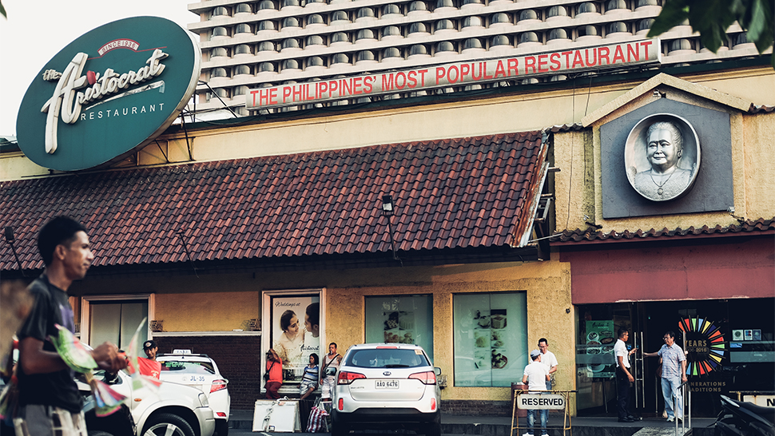

Aristocrats
146 Jupiter St Bel Air Village, Makati, Luzon Philippines

Bistro Remedios
1911 M. Adriatico Street Malate, Manila, Luzon Philippines
146 Jupiter St Bel Air Village, Makati, Luzon Philippines
1911 M. Adriatico Street Malate, Manila, Luzon Philippines

1790 M. Adriatico Street Malate, Manila.

45 Salas St Malate, Manila,

1906 Taft Avenue, Manila, Luzon Philippines..

2nd Floor, Main Building, SM City North EDSA, SM City North EDSA, Quezon City.

518 Quintin Paredes Street Binondo, Manila, Luzon Philippines..

T1000 Katigbak Parkway Rizal Park, Manila.

1200 Makati Ave Makati, Manila, .
1740J.Bocobost.Malate.Manila, Manila,.